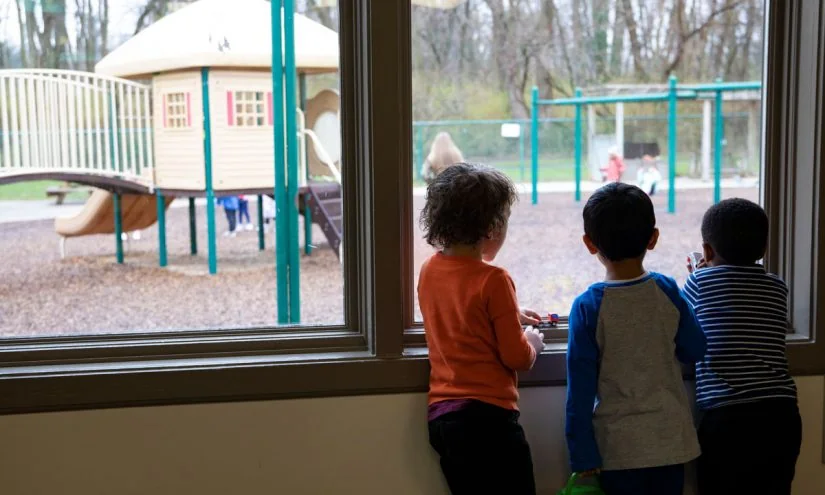

01
市实验小学红桥学校建设跑出“温情加速度”
一所新学校的建设，如何兼顾速度与温度？
天津日报报道，市实验小学红桥学校的建设正在推进，被形容为“温情加速度”。这所学校的建设，是天津优化教育资源配置的一部分。对于家长来说，新学校的落成意味着更多优质学位，也意味着孩子可能在家门口享受到更好的教育。但建设速度之外，更值得关注的是“温情”二字——它可能体现在设计细节上，比如教室采光、活动空间、安全设施，也可能体现在施工过程中对周边居民的影响控制。这些细节，往往决定了学校是否真正“以学生为本”。
从背景来看，近年来天津持续推进教育均衡发展，新建和改扩建多所学校，以缓解学位压力。红桥区作为天津中心城区之一，教育资源相对紧张，这所学校的建设承载着当地家庭的期待。所谓“加速度”，指的是工程进度较快，但“温情”一词则透露出建设过程中对人文关怀的重视。例如，施工时间避开居民休息时段，建筑材料选用环保产品，校园设计考虑低年级学生的活动安全等。这些做法，让冰冷的建筑有了温度。
对于普通家庭而言，新学校的建成意味着孩子入学有了更多选择，但同时也需要注意，新学校可能存在师资磨合、设施完善等过渡期问题。家长在关注建设进度的同时，也应了解学校的办学理念、师资配置和课程设置，而不仅仅是看硬件。此外，新学校往往需要几年时间才能形成稳定的校园文化，家长应有合理预期。
行动建议方面，家长可以关注学校官方发布的信息，参加开放日活动，实地感受校园环境。同时，可以了解周边社区对学校建设的反馈，综合评估。对于教育部门而言，在加快硬件建设的同时，也应同步推进师资招聘和培训，确保“软件”跟上“硬件”的步伐。
长期来看，教育公平不仅体现在学位数量上，更体现在教育质量上。新学校的建设是起点，后续的师资水平、课程丰富度、学生支持体系才是关键。家长在择校时，不妨把眼光放长远，关注学校的持续发展能力。
伊恩的观察
关注新学校时，除了看进度，不妨多了解它的设计理念和配套设施，这些才是孩子每天真实体验的部分。
02
中国农业大学首届“未来农业”国际暑期学校在京举办
当农业遇上国际视野，教育如何面向未来？
中国农业大学举办了首届“未来农业”国际暑期学校，来自国内外的学生汇聚北京，探讨农业科技的前沿话题。这不仅是学术交流，更是教育模式的一种探索。暑期学校打破了传统课堂的边界，让学生在实践中接触全球议题。对于学生而言，这类项目提供了跨文化沟通和跨学科思考的机会。但参与此类项目，通常需要一定的语言能力和学术基础，并非人人可得。不过，它传递的信号是：未来的教育，越来越强调全球视野和实际问题解决能力。
从背景看，农业科技正在经历深刻变革，基因编辑、智慧农业、可持续食品系统等议题成为全球关注焦点。中国农业大学作为国内顶尖农业院校，举办国际暑期学校，旨在培养具有国际竞争力的农业人才。这类项目通常包括专题讲座、实验室参观、田野调查和小组讨论，学生需要全程使用英语交流，并完成项目报告。对于参与者来说，这不仅是一次知识拓展，更是一次跨文化协作的实战演练。
对于普通学生和家长而言，这类国际项目可能显得遥远，但其背后的教育理念值得借鉴。首先，跨学科思维越来越重要，农业不再是单纯的种植养殖，而是与生物技术、信息技术、环境科学等深度融合。其次，全球视野意味着学生需要关注世界议题，而不仅仅是课本知识。最后，实践能力是教育的落脚点，暑期学校强调动手和合作，这正是未来职场需要的核心素养。
行动建议方面，即使无法参与国际项目，学生也可以通过以下方式培养相关能力：一是关注全球农业科技新闻，了解前沿动态；二是参加国内高校或机构举办的开放日、夏令营，积累实践经验；三是提升英语水平，尤其是学术英语能力；四是培养跨学科兴趣，比如选修生物、信息技术等课程。家长可以鼓励孩子多接触自然和农业，理解食物来源，培养对土地的情感。
长期来看，教育的国际化不是少数人的特权，而是一种趋势。随着中国农业走向世界，具备国际视野的人才将更有竞争力。对于每个学生而言，无论未来是否从事农业，跨文化理解和解决实际问题的能力都是通用的。因此，不妨从今天开始，打开视野，拥抱变化。
伊恩的观察
即使无法参与国际项目，也可以在日常学习中主动关注全球议题，培养自己的跨文化理解力。
03
小学老师在校拍跳舞视频被投诉：教师的个人表达与职业边界
一位舞蹈专业的老师，因为在校内拍视频引发争议，我们该如何看待？
华龙网报道，一位小学老师因在学校拍跳舞视频被家长投诉，学校已沟通谈话，老师表示会遵守要求。这位老师大学专业是舞蹈学，拍视频或许是出于个人爱好或教学需要，但家长担心影响教学或孩子注意力。这件事折射出教师职业边界的问题：教师在校园内，其行为是否应完全服务于教学？个人表达与职业规范如何平衡？学校在处理时，既需维护教学秩序，也应尊重教师个人发展。对于家长而言，沟通是解决此类问题的关键。
从背景看，随着短视频平台的普及，不少教师会在课余时间拍摄教学或生活内容，这既是个人的表达方式，也可能成为教学辅助手段。然而，校园是特殊场所，教师的一举一动都可能被家长和学生解读。家长投诉的焦点在于，老师在校内拍视频可能分散学生注意力，或者占用教学时间，甚至担心视频内容涉及学生隐私。学校介入后，要求老师不再在校内拍摄，这体现了对教学秩序的维护。
这一事件的核心是职业边界问题。教师首先是教育者，其行为应以学生利益为先。但教师也是独立的个体，有个人兴趣和表达需求。如何在两者之间找到平衡？一方面，学校可以制定明确的规范，比如在校内拍摄需提前报备，不得影响教学，不得拍摄学生等。另一方面，教师也应增强职业敏感性，区分个人空间与公共空间。对于家长来说，遇到类似情况，先与学校沟通，了解背景，避免直接对立，是更理性的选择。
行动建议方面，学校可以借此机会完善教师行为准则，明确校园内拍摄的边界；教师可以尝试将个人特长融入教学，比如舞蹈老师可以编排课间操，既发挥专业优势，又服务教学；家长则可以多与老师交流，理解老师的初衷，共同营造良好的教育氛围。
长期来看，教师个人发展与职业规范并非对立，而是可以相互促进。一个热爱生活的老师，往往更能感染学生。关键在于，如何让个人表达与教育目标相协调。这需要学校、教师和家长三方的理解与配合。
伊恩的观察
当对教师行为有疑虑时，建议先与学校沟通，了解背景，避免直接对立，共同寻找平衡点。
04
美国拟大幅削减“启蒙计划”标准，早期教育何去何从？
特朗普政府计划放宽对“启蒙计划”的联邦监管，这对贫困家庭儿童意味着什么？

据美联社报道，特朗普政府正计划对“启蒙计划”进行重大改革，可能取消其联邦质量标准，将具体规则交由各州制定。该计划自1960年代设立，旨在帮助贫困儿童，其标准涵盖师生比、健康筛查等，被视为早期教育的黄金标准。改革后，联邦法规将从百余页缩减至十几页，这意味着各州将有更大自主权，但也可能导致标准不一，贫困儿童获得的服务质量或受影响。对于家长而言，这意味着孩子所在的州将决定早期教育的质量，需要更关注本地政策。
从背景看，“启蒙计划”是美国联邦政府为低收入家庭3至5岁儿童提供的综合性早期教育项目，包括教育、健康、营养和家长参与等服务。其联邦法规详细规定了班级规模、师生比例、教师资质、健康检查等要求，确保项目质量。然而，特朗普政府认为这些规定过于繁琐，限制了州的灵活性，计划大幅削减联邦层面的监管，让各州自行决定具体标准。支持者认为，这能减少行政负担，让各州因地制宜；反对者则担心，这会导致标准下降，尤其是贫困儿童可能失去关键的保护。
对于普通家庭而言，这一改革的影响取决于所在州的政策。一些州可能会维持高标准，而另一些州可能降低要求，导致教育质量参差不齐。贫困家庭的孩子可能首当其冲，因为他们在家庭资源上本就处于劣势，更需要高质量的外部教育支持。此外，联邦监管的削弱可能影响资金分配的公平性，一些州可能将资金挪作他用。
行动建议方面，家长可以关注本地学前教育政策，了解“启蒙计划”在所在州的实施情况，积极参与家长委员会或政策听证会，表达意见。同时，家长可以通过社区资源，如图书馆、非营利组织，为孩子提供补充教育。对于教育工作者，可以关注政策动态，调整教学策略，确保孩子的基本权益。
长期来看，早期教育是人生发展的基石，政策的变化可能影响一代人的成长。无论政策如何调整，家庭和社区的支持都是孩子成长的重要保障。家长应保持警觉，为孩子争取最好的教育资源。
伊恩的观察
早期教育质量与政策密切相关，家长应关注本地学前教育标准，积极参与政策讨论，为孩子争取更好的成长环境。
05
学校开始反思：每个学生都需要一台笔记本电脑吗？
疫情后，学校大规模配备电子设备，但现在有人开始质疑这一做法。
据The 74报道，疫情期间学校为学生配备笔记本电脑以支持在线学习，但如今许多学校开始重新评估这一做法。研究发现，过度依赖电子设备可能影响学生的专注力和视力，且并非所有课程都需要电脑。一些学校开始减少设备使用，回归传统教学方式。这一反思提醒我们，技术是工具而非目的，教育应平衡线上与线下、屏幕与纸笔。对于家长而言，不必盲目追求最新设备，更重要的是培养孩子健康使用电子产品的习惯。
从背景看，2020年疫情暴发后，学校被迫转向在线教学，许多学校利用联邦紧急资金为每位学生配备了笔记本电脑或平板电脑，以确保教育连续性。这一举措在短期内解决了远程教学的问题，但也带来了新的挑战。例如，学生长时间盯着屏幕，导致视力下降、注意力不集中；一些学生沉迷于游戏或社交媒体，影响学习效果；此外，设备维护和更新成本高昂，给学校财政带来压力。随着疫情缓解，学校重新思考“一人一机”政策的必要性。
一些学校发现，并非所有课程都需要电子设备。比如，数学课用纸笔演算可能更有效，阅读课用纸质书更能培养深度阅读能力。因此，一些学校开始调整策略，减少设备使用频率，只在特定课程或活动中使用。同时，学校也在加强数字素养教育，教导学生如何合理使用技术，而不是完全依赖。
对于家长而言，这一反思具有现实意义。在为孩子选择学习工具时，应基于实际需求，而非盲目跟风。例如，小学阶段的孩子可能不需要高性能电脑，一台简单的平板或学习机即可满足需求。更重要的是，家长应引导孩子养成健康的数字使用习惯，如设定屏幕时间、鼓励户外活动、亲子共读等。
行动建议方面，家长可以与学校沟通，了解学校的设备政策，配合学校管理孩子的电子设备使用。同时，家庭中可以设立“无屏幕”时段，如用餐时间、睡前时间，培养孩子的自律能力。对于学校而言，应定期评估设备使用效果，根据教学需求调整策略，避免“一刀切”。
长期来看，技术在教育中的角色是辅助而非替代。教育的本质是人的成长，技术只是工具。学校、家长和学生都应保持理性，让技术服务于教育，而不是让教育被技术绑架。
伊恩的观察
在为孩子选择学习工具时，考虑实际需求，而非跟风。培养良好的数字使用习惯，比拥有设备更重要。
无障碍文字记录
伊恩 你好，欢迎收听伊恩每日。今天是2026年8月4日。今天想跟你聊的这五件事，表面上看互不相干——天津盖了一所新学校，农业大学办了个国际暑期班，一个小学老师因为拍跳舞视频被家长投诉，美国那边在讨论要不要砍掉Head Start的标准，还有学校在反思是不是每个学生都得有台笔记本电脑。但把它们放在一起，你会看到一个共同的问题：教育的边界到底在哪里？谁来决定教室里该发生什么？谁来决定孩子该学什么？今天我们就从这些具体的事出发，一层层拆开来看。
伊恩 今天想跟你聊的，是一条来自天津日报的新闻：市实验小学红桥学校建设跑出了“温情加速度”。标题里“温情”两个字，一下子把钢筋水泥的基建新闻拉到了人的尺度上。学校建设，通常我们关心的是工期、面积、学位数量，但“温情”这个词提醒我们，建学校本质上是在为孩子的成长环境做设计。
先说事实。根据天津日报的报道，这所学校正在建设中，并且强调“温情加速度”。但坦率地说，目前我们拿到的信息只有标题，具体“温情”体现在哪里——是教室采光、活动空间安全、环保材料，还是建设过程中对周边社区和儿童需求的关照——都还没有细节披露。所以今天，我不打算过度解读这条新闻本身，而是想借这个由头，跟你聊聊“学校建设中的儿童视角”这件事。
我们常常把学校当成一个标准化的容器：课桌、黑板、操场，似乎只要功能齐全就够了。但儿童发展心理学的研究早就告诉我们，物理环境对孩子的情绪、注意力和社交行为有直接影响。比如，自然采光充足的教室能减少疲劳感，色彩柔和的空间能降低焦虑，而开放的活动角落则鼓励合作与探索。这些细节，往往比我们想象得更重要。
那么，“温情”为什么值得被强调？因为它意味着建设者开始把儿童的需求放在工程效率之前。这背后其实是一种价值观的转变：学校不只是教书的场所，更是育人的环境。但也要警惕另一种倾向——把“温情”当成宣传话术。如果只是口号，而没有落实到设计图纸和材料选择上，那“温情”就变成了空中楼阁。所以，我们需要追问：这所学校在采光、通风、噪音控制、活动安全上，具体做了哪些不一样的设计？这些细节，才是检验“温情”成色的试金石。
这件事对普通人的影响，可能比你想象得更直接。如果你家里有学龄前的孩子，那么未来几年，你可能会面临择校。当你在选择学校时，除了看师资和升学率，不妨也留意一下校园环境：教室的窗户大不大，课桌椅是不是可调节的，操场有没有足够的遮阴，卫生间是否干净方便。这些看似琐碎的细节，其实每天都在影响孩子的身体和情绪状态。
对于教育工作者和学校管理者来说，这条新闻也是一个提醒：在规划新校舍或改造旧校园时，可以主动邀请儿童发展专家参与设计，甚至让孩子自己提出对校园空间的想象。一个被孩子参与设计的角落，可能比任何昂贵的设备都更有温度。
从更宏观的层面看，“温情加速度”这个词也折射出当前教育基建的一个趋势：从追求数量到追求质量。过去二十年，我们解决了“有没有学上”的问题，现在开始关注“上得好不好”。这种转变是好事，但也要注意，硬件升级不能替代软件建设。再美的校园，如果缺少有温度的老师、有活力的课程，也只是一具空壳。
最后，我想说，教育的公平，不仅体现在学位数量上，也体现在每个孩子每天所处的物理环境里。当我们为了一所学校跑出“加速度”时，希望“温情”不是一句口号，而是刻在每一块砖、每一扇窗里的承诺。至于这所学校到底“温情”在哪里，我们保持关注，等更多细节披露后，再一起检验。
感谢你收听今天的伊恩每日，我们明天见。
伊恩 中国农业大学在8月初举办了首届“未来农业”国际暑期学校，地点在北京。根据学校新闻网的报道，这个暑期学校邀请了来自不同国家的学生和学者参与。具体有多少人参加、课程怎么安排，目前还没有更多细节。但“未来农业”这四个字，本身就值得琢磨。
我们通常理解的农业，可能是种地、养殖，跟泥土打交道。但“未来农业”指向的是智慧农业、生物技术、可持续发展这些方向。也就是说，农业不再是传统印象里的样子，它正在跟人工智能、气候变化、粮食安全这些全球性议题挂钩。国际暑期学校的形式，意味着参与者不只是中国学生，还有来自其他国家的年轻人。他们聚在一起，用一段时间集中学习、讨论、合作。
这件事对谁有影响？首先是参与的学生。对他们来说，暑期学校不是常规课程，而是一个补充性的学习机会。在几天或几周的时间里，他们能接触到前沿的研究方向，也能跟不同文化背景的人交流。这种经历，可能比课堂上的知识更能打开视野。其次是高校。举办这样的活动，说明大学在尝试把教育从传统的教室里延伸出去，用更开放的方式培养人。
但我们也得看到另一面。国际暑期学校听起来光鲜，实际效果却不一定均匀。对有些学生来说，这可能是一次宝贵的跨文化体验；但对另一些人，可能只是走马观花，或者变成简历上的一行字。关键在于，学生自己有没有主动去吸收、去提问、去建立联系。如果只是被动参加，收获会大打折扣。
对普通大学生来说，这件事的启示是：学习不一定要等学校安排。暑期学校、国际交流、跨学科项目，这些机会确实存在，但名额有限，竞争激烈。如果你感兴趣，可以提前关注学校的通知，准备好语言能力和专业知识，主动申请。即使没能参加，也可以自己组织学习小组，或者在线旁听一些公开课。
教育的边界正在拓宽，这已经是一个事实。但拓宽不等于自动变好。真正的成长，还是取决于你愿不愿意走出舒适区，去接触那些陌生的、复杂的、需要你动脑的东西。农业如此，其他领域也一样。
我是伊恩，明天见。
伊恩 今天想和你聊一件小事，但它背后藏着一个很多老师、家长都会遇到的难题。
事情是这样的：一位小学老师，大学学的是舞蹈专业，平时会在学校里拍一些跳舞的视频。结果被家长投诉了。学校回应说，已经和老师沟通谈话，她不会再在校内拍。当事人自己也说，没想到会带来这么大的争议，会遵守学校的要求。
先摆事实：这位老师有舞蹈专业背景，拍视频可能出于专业展示或教学辅助的考虑。家长投诉的点，大概率是担心拍视频占用教学时间，或者分散孩子的注意力。学校夹在中间，既要回应家长诉求，又要保护老师的积极性。目前的结果是，老师停止在校内拍摄，事情暂时平息。
但这件事真正值得琢磨的，是它暴露出的三个角色之间的张力。
对老师来说，专业热情和个人表达是真实的。一个舞蹈专业的老师，想把自己擅长的东西带进校园，这本身没有错。但老师的工作场景是学校，面对的是未成年人，一举一动都会被放大。在校内拍视频，哪怕是在课余时间，也很容易被家长理解为“不务正业”或者“作秀”。这不是老师个人的问题，而是职业身份带来的天然约束。
对家长来说，担忧也是真实的。家长把孩子交给学校，最看重的是教学质量和专注度。看到老师拍视频，第一反应往往是：这会不会影响上课？会不会让孩子也想着拍视频而不是学习？这种担忧不一定是针对老师本人，而是对“学校环境”的敏感。
对学校来说，处理这类事情最考验智慧。如果简单粗暴地禁止老师拍视频，可能会打击老师的积极性，让校园失去一些活力；如果放任不管，又可能引发更多家长不满。目前学校的处理——沟通、谈话、明确要求——算是比较稳妥的。但关键在于，这种沟通是否真正让三方都理解了彼此的立场。
这里没有绝对的对错，但有一个核心问题：老师的个人表达和职业规范之间的边界在哪里？
我的判断是：边界不是靠“一刀切”划出来的，而是靠沟通和共识。老师可以在校外、在自己的私人时间展示才艺，这完全没问题。但在校内，尤其是在学生面前，就需要更谨慎。因为校园是一个特殊场域，老师的每一个行为都可能成为学生的模仿对象，也可能成为家长评判的依据。
这件事对普通人的启示是：无论你是老师、家长，还是职场人，都要意识到“身份”和“场合”的重要性。在职场中，你的专业热情值得被尊重，但表达方式需要符合职业规范。同样，当你对别人的行为有疑虑时，最好的方式不是直接投诉，而是先沟通，了解对方的初衷。
最后想对那位老师说：你的专业背景是宝贵的，不要因为这次争议就放弃自己的热爱。只是下次，可以换个场合、换个方式去表达。也希望对家长说：老师的热情需要被保护，但合理的担忧也值得被倾听。学校作为中间人，如果能搭建起更透明的沟通渠道，很多误解其实可以避免。
这件事没有输家，关键是我们能否从中学会：在表达自己与尊重规则之间，找到那个平衡点。
听众 伊恩，我是一名小学老师，我也喜欢拍抖音记录课堂，但看到这个新闻有点慌，我该不该继续拍？
伊恩 你的担心我理解。但先别慌，这件事的关键不是“能不能拍”，而是“在哪里拍、拍什么、用来做什么”。如果你拍的是课堂上的教学片段，目的是跟家长分享孩子的学习状态，那通常没问题。但如果你拍的是自己个人的才艺展示，而且是在教学时间，那就容易引起误解。我的建议是：第一，了解学校的规章制度，有的学校有明确要求；第二，拍之前问自己，这个视频是为了教学服务，还是为了个人流量？第三，如果拿不准，可以先跟学校沟通，获得允许再拍。这样既保护自己，也尊重家长和学校。
伊恩 今天想跟你聊一件发生在遥远地方、但可能影响很多家庭的事。根据美联社的报道，特朗普政府正在计划对美国的Head Start项目进行大幅改革，可能会取消它的质量标准，把具体规则下放给各州自己定。
先说说Head Start是什么。它是1960年代成立的早期教育项目，专门帮助低收入家庭的孩子，让他们在学前阶段就能获得教育和健康支持。几十年来，它一直被专家视为早期教育的“黄金标准”。它的联邦法规超过100页，详细规定了班级里孩子和老师的比例、孩子的健康筛查、家庭参与方式等等。这些标准不是凭空写的，每一项背后都有研究和实践支撑，目的是保证那些最弱势的孩子能得到有质量的照顾。
现在，改革的方向是：把这100多页的规则压缩到十几页，大部分细节交给州和地方自己决定。支持者会说，这样更灵活，各地可以根据自己的情况调整。但反对者担心，一旦标准放松，服务质量会参差不齐，尤其是贫困地区的孩子，可能最先失去保障。
这件事虽然发生在美国，但对我们每个人都有警示意义。你可以把它理解成一个关于“标准”的故事。标准是什么？它像一道护栏，保护那些没有能力为自己发声的人。当护栏被拆除，看起来是给了更多自由，但自由并不均等——有钱的家庭可以自己找更好的资源，而贫困家庭只能依赖公共系统。一旦公共系统的底线被拉低，最先受伤的，就是那些最没有选择权的人。
这件事也让我想到，我们身边其实也有类似的讨论。比如，学校该不该统一教材？课外活动该不该有统一标准？这些问题的核心，都是“谁来保证质量”和“谁来承担风险”。当标准被放松，短期看是减负，长期看可能是更大的不公平。
所以，无论你是家长、老师，还是只是关心教育的人，都可以从这件事里得到一个提醒：关注那些保护弱势群体的规则，它们的存在不是多余的。当有人提议“简化”或“灵活”时，多问一句：谁会被落下？
这就是今天想跟你分享的。我们明天见。
伊恩 今天想跟你聊一个关于技术、教育和孩子的话题。你可能还记得，2020年疫情暴发，学校突然停课，孩子们被迫在家上网课。那时候，很多学校紧急采购笔记本电脑和平板电脑，确保每个学生都有一台设备，能跟老师连线。当时这被视为应急的必要之举，也确实帮很多孩子度过了那段特殊时期。
但最近，美国的一些学校开始重新思考：真的每个学生都需要一台自己的笔记本电脑吗？据The 74报道，疫情结束后，虽然大部分学校恢复了线下教学，但很多学校仍然高度依赖在线平台和应用程序来完成作业。然而，一些教育工作者发现，过度使用电子设备带来了新的问题：学生上课容易分心，视力下降，课间交流变少，甚至有些孩子沉迷游戏。于是，部分学校开始调整策略，不再强调“一人一机”，而是根据实际教学需要，灵活安排设备使用。比如，有的课堂需要用电脑做研究，就开放机房；有的课堂需要专注阅读，就要求把设备收起来。
这件事背后的机制其实很简单：技术是工具，不是目的。我们曾经以为设备越多越好，每个孩子人手一台平板，就代表教育现代化了。但现实是，工具的价值在于如何使用，而不是拥有多少。当设备成为标配，却没有配套的使用规则和引导，它就可能变成干扰源，而不是学习助手。
这对普通人的影响是实实在在的。对家长来说，这提醒我们，不要盲目跟风给孩子买最新款的平板或手机。孩子需要的不是更贵的设备，而是健康的数字习惯。你可以和孩子约定使用时间，引导他们用设备查资料、学编程，而不是刷短视频。对学校和教育者来说，这提醒我们，技术应该服务于教学目标，而不是反过来让教学迁就技术。
当然，这并不意味着我们要回到没有电子设备的时代。数字素养是未来必备的能力，关键在于平衡。就像我们不会因为刀能伤人就不用刀，而是教会孩子如何安全使用。同样，我们也不该因为电脑可能让孩子分心，就完全禁止。而是要在使用中培养自律，在规则中建立边界。
这件事也让我想到更长远的教育公平问题。当一些学校在收缩设备配置时，另一些学校可能还在努力为每个孩子配齐电脑。数字鸿沟依然存在。但真正的公平，不是让每个孩子拥有同样的设备，而是让每个孩子都能获得适合他的学习方式。有的孩子可能用电脑学得更快，有的孩子可能更喜欢纸笔阅读。尊重差异，提供选择，或许才是更重要的。
说到底，教育的核心从来不是设备，而是人。当我们把注意力从“有没有”转移到“怎么用”，我们才真正开始思考技术在教育中的位置。希望今天的分享，能给你一些启发。我们明天见。
听众 伊恩，学校准备给每个孩子配平板电脑，但我觉得孩子自控力差，担心影响学习，该怎么办？
伊恩 你的担心很正常。但先别急着反对，我们可以把这个问题拆开来看。首先，学校配平板电脑，目的是什么？是为了教学，还是为了赶时髦？如果是教学需要，那我们可以跟学校沟通，了解使用规则，比如每天用多久、用什么软件、有没有监管。其次，孩子的自控力是可以培养的。一开始可以限定使用时间，慢慢让孩子学会自我管理。最后，如果你实在不放心，可以申请让孩子不带回家，只在学校用。关键不是一刀切，而是找到平衡点。技术本身没有好坏，关键在于如何使用。
伊恩 好，今天五件事聊完了，我们回头看看。天津的新学校，强调的是建设速度，但教育的温度需要慢慢打磨。农大的国际暑期学校，展示了大学如何打开边界。小学老师拍视频的争议，提醒我们个人表达与职业规范的平衡。美国的Head Start改革，让我们看到标准的重要性。而笔记本电脑的反思，则告诉我们技术应该服务于人，而不是反过来。这些事看似分散，但都指向同一个核心：教育的边界正在被重新绘制。谁来定规则？是政府、学校、老师，还是家长？每个角色都有自己的立场，但最终，我们都要回到孩子的成长。教育的公平，不是让所有人得到同样的东西，而是让每个孩子都能得到他需要的东西。希望今天的节目能给你一些启发。我是伊恩，我们明天见。
伊恩 感谢收听今天的伊恩每日·教育。如果你有什么想法或问题，欢迎在评论区留言。我们明天同一时间，再见。